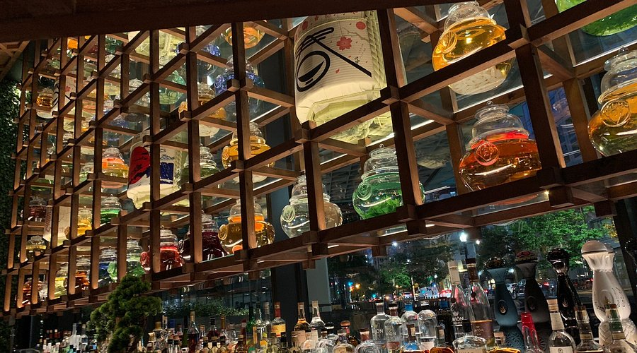
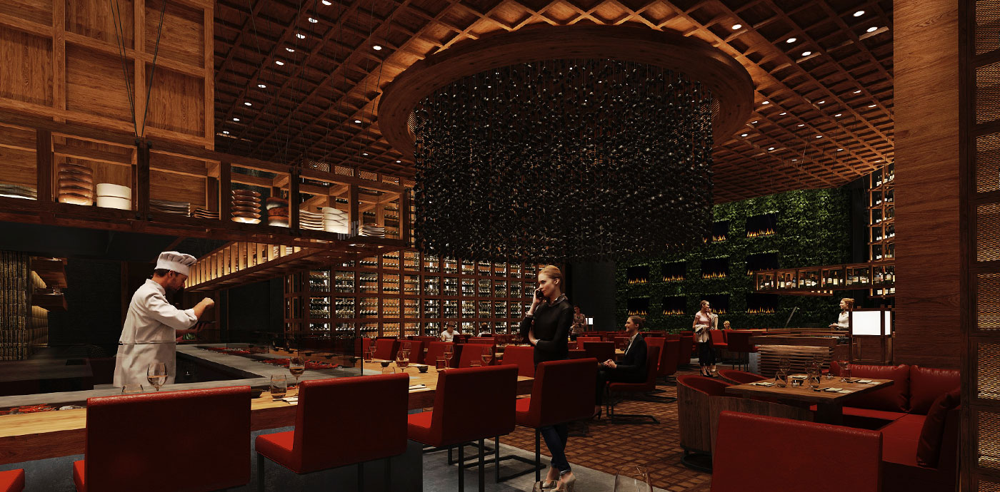
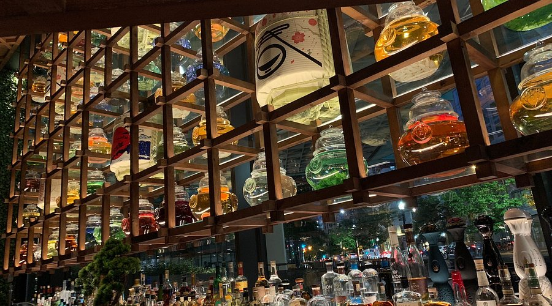
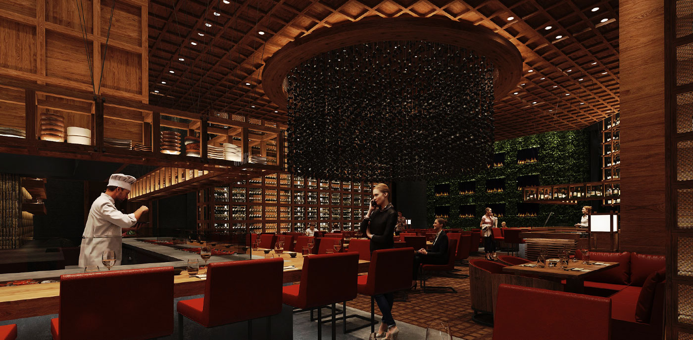

Our Story
Ezo Kitchen Sushi & Sake Bar was founded by chefs Michael Chen and Daniel Martinez, two friends whose shared passion for Asian cuisine grew into a vision of something new for Long Island. After meeting at a culinary institute, they bonded over their love for craft, culture, and connection through food.
Michael, a third-generation Japanese-American (sansei), trained under master sushi chefs in Los Angeles and Tokyo before moving into restaurant management. His deep understanding of Japanese culinary tradition and precision forms the foundation of Ezo’s kitchen. Daniel spent five years traveling and cooking across Asia, studying Japanese kaiseki cuisine in Kyoto, and working in professional kitchens in Vietnam and Thailand, where he developed an appreciation for the balance, freshness, and vibrancy of Southeast Asian flavors.
Together, they created Ezo; a restaurant that brings the beauty of Japanese, Vietnamese, and Thai cooking together in one space, each culture shining on its own but working in harmony.
Ezo is about more than great food, it’s about sharing cultures, experiences, and craftsmanship through every plate. In a community where most “Asian food” means takeout or hibachi chains, we wanted to offer something different. Authentic sushi, fresh Vietnamese flavors, and bold Thai dishes, all made with care and respect for where they come from.
Our name, “Ezo,” comes from the old name for Hokkaido, Japan a nod to Michael’s family roots and a reminder of where our story begins. But it also represents something bigger: honoring tradition while still moving forward and making it our own. We want people to walk into Ezo and feel something; whether it’s nostalgia, curiosity, or just the simple comfort of a great meal shared with good company.
 



Our Space
When it came to designing Ezo, we wanted the space to feel like the food tastes: calm, balanced, and layered with meaning. The design takes cues from Japanese minimalism: natural materials, clean lines, and a sense of stillness. Then we added touches of Vietnam and Thailand colors, textures, and patterns that bring warmth and life into the space. It’s not about mashing cultures together, but letting each one have its moment while still belonging to the same story.